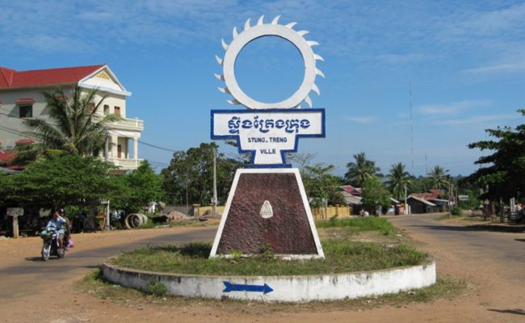

ការពិពណ៏នាអំពី ខេត្តនីមួយៗនៅក្នងប្រទេសកម្ពុជា
ទំព័រដើម
តាកែវ
ភ្នំពេញ
កែប
ព្រះសីហនុ
ស្វាយរៀង
កំពង់ធំ
បាត់ដំបង
ពោធ៏សាត់
សៀមរាប
រតនគីរី
មណ្ឌលគីរី
ក្រចេះ
ត្បូងឃ្មុំ
កំពង់ចាម
ព្រៃវែង
កណ្តាល
ឧត្តរមានជ័យ
កំពង់ឆ្នាំង
កំពង់ស្ពឺ
បន្ទាយមានជ័យ
កោះកុង
ប៉ៃលិន
កំពត
ស្ទឹងត្រែង
ព្រះវិហារ
ទំនាក់ទំនង
ខេត្តស្ទឹងត្រែង

ព័ត៌មានសង្ខេបអំពីខេត្តស្ទឹងត្រែង
> ខេត្តស្ទឹងត្រែង គឺជាខេត្តមួយនៅចុងខាងជើងនៃប្រទេសកម្ពុជា។ ឈ្មោះដើមហៅថា សុវណ៌្ណបុរ នៃដែនដីសុវណ៌្ណភូមិ កម្វុជទេឝ (ប្រាសាទបុរាណខ្មែរសាងច្រើនពីឥដ្ឋលាយថ្មភក់ ក្នុងសម័យហ្វូណន និងដើមសម័យចេនឡា) និងអាចតាមអ្នកស្រុកថា ឆ្ទិងតេង តាមភាសាសំស្ក្រឹត (ភាសាលាវថា សៀងតេង) ដែលមានព្រះសិវលិង្គរកឃើញចំនួន២គឺ វ្រះ ឝិវលិង្គ សុវណ៌្ណេឝ្វរ និងវ្រះឝិវលិង្គ សុវណ៌្ណលិង្គ និងមានទន្លេមេគង្គត្រូវហៅឈ្មោះដើមថា ទន្លេកម្វុជ / កម្ពុជា ហៅតាមសំស្ក្រឹតថា មហាតីថ៌ ហើយក្រុងស្ទឹងត្រែងត្រូវប្រសព្វទន្លេជាច្រើនខ្សែហៅថា តីថ៌ (តីថ៌ ត្រូវចាត់ជាទន្លេលាងបាប និងមានមន្តសិរីជ័យមង្គលដល់អ្នកស្រុក)។ ទីក្រុងរបស់ខេត្តស្ទឹងត្រែងមានឈ្មោះថា ទីក្រុងស្ទឹងត្រែង។ ខេត្តមួយនៃប្រទេសកម្ពុជានៅភាគឦសាន។ ដែលមានព្រំប្រទល់ជាប់ខេត្តរតនគិរីនៅខាងកើត ខេត្តមណ្ឌលគិរីនិងខេត្តក្រចេះនៅខាងត្បូង និងខេត្តកំពង់ធំនិងខេត្តព្រះវិហារ នៅខាងលិច ខេត្តនេះមានព្រំប្រទល់ខាងជើងជាប់នឹងព្រំដែនអន្តរជាតិឡាវ។ ក្នុងខេត្តនេះមានទន្លេមេគង្គហូរកាត់ខេត្ត។ ខេត្តនេះភាគច្រើនគ្របដណ្តប់ដោយព្រៃឈើ និងធនធានជលផលមានសភាពសម្បូរបែប។
> ខេត្តស្ទឹងត្រែង ដោយមានផ្ទៃដី១១.០៩២ គីឡូម៉ែត្រក្រឡា គឺជាខេត្តមួយដាច់ស្រយាលជាប់ព្រំដែនប្រទេសឡាវ និងមានប្រជាជនរស់នៅតិចតួចនៅឯភូមិភាគឦសាននៃប្រទេសកម្ពុជា។ ហើយមានព្រំប្រទល់ជាប់ប្រទេសឡាវ នៅផ្នែកខាងជើង ខេត្តរតនគិរីនៅខាងកើត ខេត្តព្រះវិហារនៅខាងលិច និង ខេត្តក្រចេះ និងខេត្តកំពង់ធំនៅខាងត្បូង។ ខេត្តចែកចេញជា ១ក្រុង ៥ស្រុក ៣៤ ឃុំ និង ១២៨ ភូមិ។
> ខេត្តស្ទឹងត្រែងមានស្រុកចំនួន ៤ :
- ស្រុកស្ទឹងត្រែង
- ស្រុកស្រង៉ែ
- ស្រុកថ្មលាង
- ស្រុកដូនហាក់